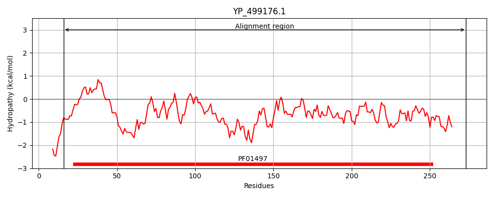
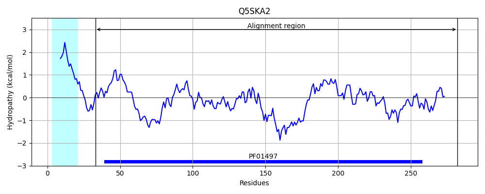
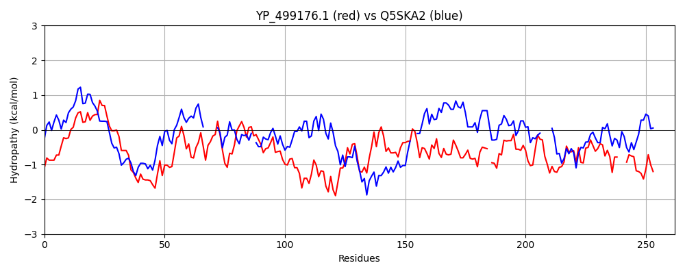

Hit Accession: Q5SKA2
Hit TCID: 3.A.1.14.26
Hit Description: gnl|BL_ORD_ID|14483 gnl|TC-DB|Q5SKA2|3.A.1.14.26 Iron ABC transporter, substrate-binding protein OS=Thermus thermophilus (strain HB8 / ATCC 27634 / DSM 579) OX=300852 GN=TTHA0746 PE=4 SV=1
Mach Len: 262
e:0.000000
Query TMS Count : 0
Hit TMS Count: 1
TMS-Overlap Score: 0.000000
Predicted Substrates:CHEBI:17439;cyanocob(III)alamin
BLAST Alignment:
Score: 280 , Bit scores: 112 bits, E-value: 1.5e-29, Alignment length: 262, Percentage identity: 27
Query: 16 KSPYHRIVSLMPSNTEILYELGLGKYIVGVSTVDDYPKDVKKGKKQFDALNLNKEELLKAKPDLILAHESQKATANKVLSSLEKQGIKVVYVKDAQSIDETYNTFKQIGKLTHHDKQAEQLVEETKDNIDKVIDSIPAHHKKSKVFIEVSSKPEIYTAGKHTFFNDMLEKLEAQNVYSDINGWNP-VTKESIIKKNPDILISTEAKTRSDYMDIIKKRGGFNKINAVKNTRIEVVNGDE---VSRPGPRIDEGLKELRDAIY 273
++P RIV+++PS TE + LG IV D+P+ VK+ K N N E ++ KPDL+L + ++ +LE+ G+ VY ++ ++ + T + +G+L + +AE+LV + + + + + +V+ E+ P YT G +F ++ K N+ G P ++ E +++K+P+++++T ++ I+ R G+++I AV+ RI V G E +SRPGPR+ + L+ L D +
Sbjct: 33 QAPPKRIVTMLPSVTETVCALGACDRIVATDDYSDWPESVKRLPKAGGLYNPNPELIVSLKPDLVLV-----SKYGRLYETLERAGL-TVYAVRTETYEDIFKTVRTLGRLLGLEAEAERLVAQIQKEVYQEEARAAKARSRPRVYYEIDPTP--YTVGPESFIGVLISKARGVNIVPKELGLFPKISPEFVVEKDPEVIVATYPNA----LETIRSRPGWSRIQAVRTGRICVYTGGEDSLLSRPGPRVAQALRLLVDCFH 282 | Protein Hydropathy Plots: |
|---|
|  |  |
Pairwise Alignment-Hydropathy Plot:
|
|---|
|  |